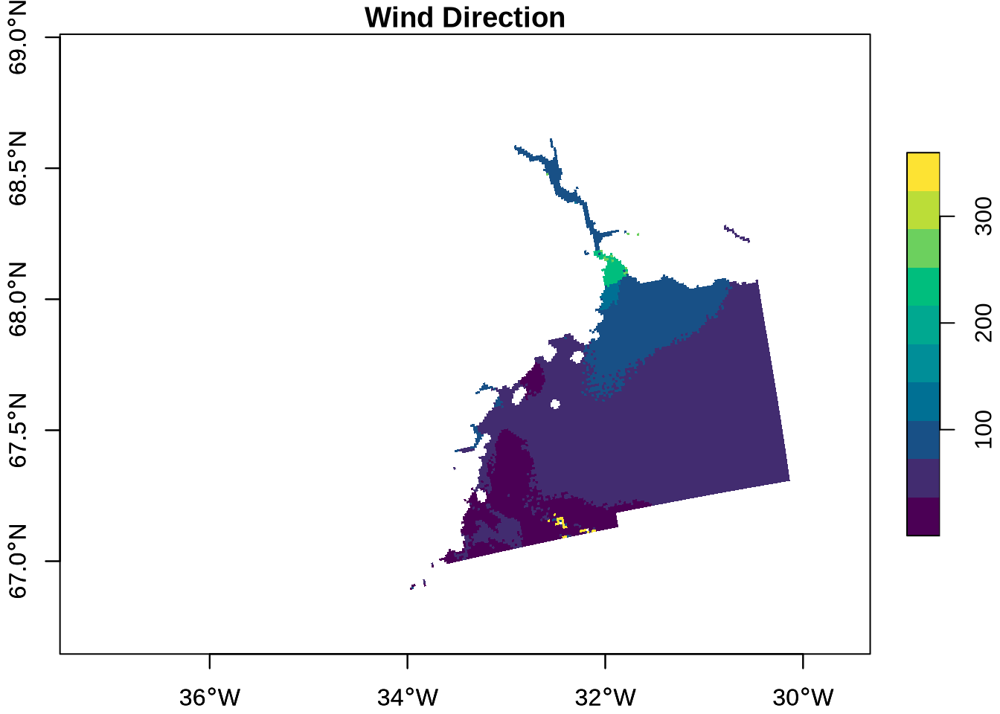
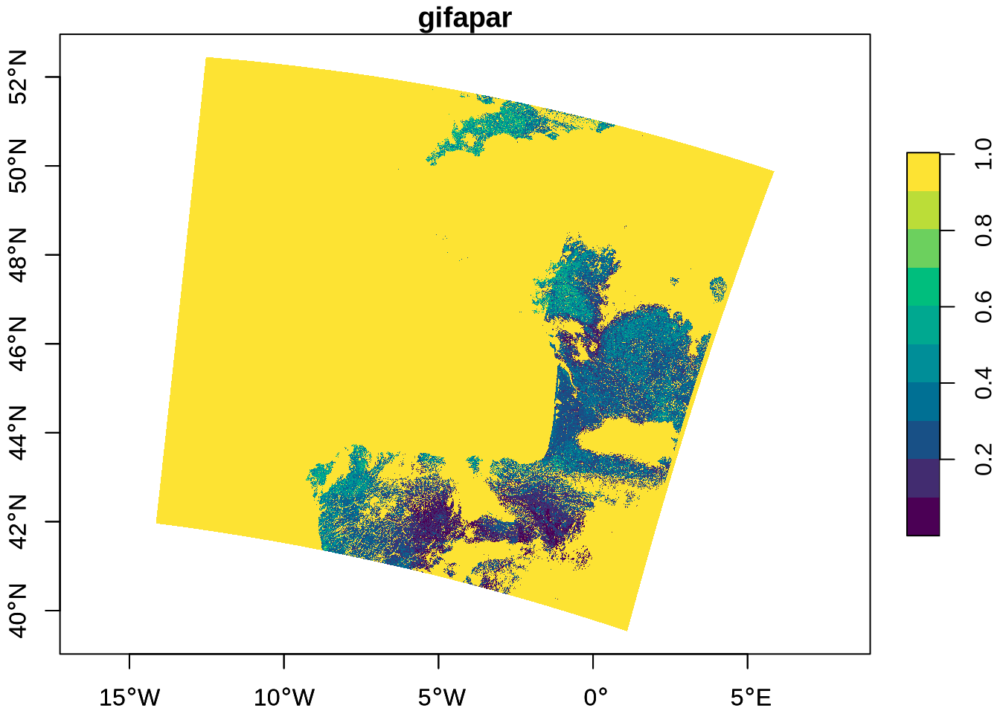

# install.packages("rstac")
# install.packages("tidyverse")
# install.packages("stars")
# install.packages("terra")More examples analysing EOPF STAC Zarr data with R
By: @sharlagelfand
Introduction
This tutorial expands on the previous tutorials (Access the EOPF Zarr STAC API with R and Access and analyse EOPF STAC Zarr data with R), going into further details on analysing and visualising Zarr data from the EOPF Sample Service STAC catalog programmatically using R. We recommend reviewing the previous tutorials if you have not done so already.
What we will learn
- 🗂 How to extract measurements, such as Ocean Wind field and GIFAPAR, along with latitude and longitude
- 📊 How to format, scale, and visualise satellite data on a curvillinear grid
Prerequisites
An R environment is required to follow this tutorial, with R version >= 4.5.0. We recommend using either RStudio or Positron (or a cloud computing environment) and making use of RStudio projects for a self-contained coding environment.
Dependencies
We will use the following packages in this tutorial:
rstac(for accessing the STAC catalog)tidyverse(for data manipulation)stars) (for working with spatiotemporal data)terra(for working with spatial - data in raster format)
You can install them directly from CRAN:
We will also use the Rarr package (version >= 1.10.1) to read Zarr data. It must be installed from Bioconductor, so first install the BiocManager package:
# install.packages("BiocManager")Then, use this package to install Rarr:
# BiocManager::install("Rarr")Finally, load the packages into your environment:
library(rstac)
library(tidyverse)
library(Rarr)
library(stars)
library(terra)Sentinel-1
The first example looks at Sentinel-1 Level 2 Ocean (OCN) data, which consists of data for oceanographic study, such as monitoring sea surface conditions, detecting oil spills, and studying ocean currents. This example will show how to access and plot Wind Direction data.
First, select the relevant collection and item from STAC:
first_item <- stac("https://stac.core.eopf.eodc.eu/") |>
collections(collection_id = "sentinel-1-l2-ocn") |>
items(limit = 1) |>
get_request()
first_item_id <- first_item[["features"]][[1]][["id"]]
l2_ocn <- stac("https://stac.core.eopf.eodc.eu/") |>
collections(collection_id = "sentinel-1-l2-ocn") |>
items(feature_id = first_item_id) |>
get_request()
l2_ocn###Item
- id: S1C_IW_OCN__2SDH_20250921T194014_20250921T194043_004227_008634_1302
- collection: sentinel-1-l2-ocn
- bbox: xmin: -36.82763, ymin: 66.72476, xmax: -29.99337, ymax: 68.93933
- datetime: 2025-09-21T19:40:29.291309Z
- assets: osw, owi, rvl, product, zipped_product, product_metadata
- item's fields:
assets, bbox, collection, geometry, id, links, properties, stac_extensions, stac_version, typeWe can look at each of the assets’ titles to understand what the item contains:
l2_ocn |>
pluck("assets") |>
map("title")$osw
[1] "Ocean Swell spectra"
$owi
[1] "Ocean Wind field"
$rvl
[1] "Surface Radial Velocity"
$product
[1] "EOPF Product"
$zipped_product
[1] "Zipped EOPF Product"
$product_metadata
[1] "Consolidated Metadata"We are interested in the “Ocean Wind field” data, and will hold onto the owi key for now.
To access all of the owi data, we get the “product” asset and then the full Zarr store, again using our helper function from the previous tutorial to extract array information from the full array path:
derive_store_array <- function(store, product_url) {
store |>
mutate(array = str_remove(path, product_url)) |>
relocate(array, .before = path)
}
l2_ocn_url <- l2_ocn |>
assets_select(asset_names = "product") |>
assets_url()
l2_ocn_store <- l2_ocn_url |>
zarr_overview(as_data_frame = TRUE) |>
derive_store_array(l2_ocn_url)
l2_ocn_store# A tibble: 114 × 8
array path data_type endianness compressor dim chunk_dim nchunks
<chr> <chr> <chr> <chr> <chr> <lis> <list> <list>
1 /osw/S01SIWOCN… http… float32 little blosc <int> <int [3]> <dbl>
2 /osw/S01SIWOCN… http… float32 little blosc <int> <int [2]> <dbl>
3 /osw/S01SIWOCN… http… float32 little blosc <int> <int [2]> <dbl>
4 /osw/S01SIWOCN… http… float32 little blosc <int> <int [2]> <dbl>
5 /osw/S01SIWOCN… http… float32 little blosc <int> <int [2]> <dbl>
6 /osw/S01SIWOCN… http… float32 little blosc <int> <int [2]> <dbl>
7 /osw/S01SIWOCN… http… float32 little blosc <int> <int [5]> <dbl>
8 /osw/S01SIWOCN… http… float32 little blosc <int> <int [5]> <dbl>
9 /osw/S01SIWOCN… http… float32 little blosc <int> <int [3]> <dbl>
10 /osw/S01SIWOCN… http… float32 little blosc <int> <int [3]> <dbl>
# ℹ 104 more rowsNext, we filter to access owi measurement data only:
l2_ocn_store |>
filter(str_starts(array, "/owi"), str_detect(array, "measurements"))# A tibble: 4 × 8
array path data_type endianness compressor dim chunk_dim nchunks
<chr> <chr> <chr> <chr> <chr> <lis> <list> <list>
1 /owi/S01SIWOCN_… http… float32 little blosc <int> <int [2]> <dbl>
2 /owi/S01SIWOCN_… http… float32 little blosc <int> <int [2]> <dbl>
3 /owi/S01SIWOCN_… http… float32 little blosc <int> <int [2]> <dbl>
4 /owi/S01SIWOCN_… http… float32 little blosc <int> <int [2]> <dbl> Since all of these arrays start with a long ID, we can remove that to get a clearer idea of what each array is:
owi <- l2_ocn_store |>
filter(str_starts(array, "/owi"), str_detect(array, "measurements"))
array_id_prefix <- str_split(owi[["array"]], "measurements", simplify = TRUE)[, 1] %>%
unique()
array_id_prefix[1] "/owi/S01SIWOCN_20250921T194014_0029_C024_1302_008634_HH/"array_id_prefix <- paste0(array_id_prefix, "measurements/")
owi <- owi |>
mutate(array = str_remove(array, array_id_prefix))
owi# A tibble: 4 × 8
array path data_type endianness compressor dim chunk_dim nchunks
<chr> <chr> <chr> <chr> <chr> <lis> <list> <list>
1 latitude https:… float32 little blosc <int> <int [2]> <dbl>
2 longitude https:… float32 little blosc <int> <int [2]> <dbl>
3 wind_direction https:… float32 little blosc <int> <int [2]> <dbl>
4 wind_speed https:… float32 little blosc <int> <int [2]> <dbl> We are interested in wind_direction, as well as the coordinate arrays (latitude and longitude). We can get an overview of the arrays’ dimensions and structures:
owi |>
filter(array == "wind_direction") |>
pull(path) |>
zarr_overview()Type: Array
Path: https://objects.eodc.eu:443/e05ab01a9d56408d82ac32d69a5aae2a:202509-s01siwocn-eu/21/products/cpm_v256/S1C_IW_OCN__2SDH_20250921T194014_20250921T194043_004227_008634_1302.zarr/owi/S01SIWOCN_20250921T194014_0029_C024_1302_008634_HH/measurements/wind_direction
Shape: 194 x 254
Chunk Shape: 194 x 254
No. of Chunks: 1 (1 x 1)
Data Type: float32
Endianness: little
Compressor: bloscowi |>
filter(array == "latitude") |>
pull(path) |>
zarr_overview()Type: Array
Path: https://objects.eodc.eu:443/e05ab01a9d56408d82ac32d69a5aae2a:202509-s01siwocn-eu/21/products/cpm_v256/S1C_IW_OCN__2SDH_20250921T194014_20250921T194043_004227_008634_1302.zarr/owi/S01SIWOCN_20250921T194014_0029_C024_1302_008634_HH/measurements/latitude
Shape: 194 x 254
Chunk Shape: 194 x 254
No. of Chunks: 1 (1 x 1)
Data Type: float32
Endianness: little
Compressor: bloscowi |>
filter(array == "longitude") |>
pull(path) |>
zarr_overview()Type: Array
Path: https://objects.eodc.eu:443/e05ab01a9d56408d82ac32d69a5aae2a:202509-s01siwocn-eu/21/products/cpm_v256/S1C_IW_OCN__2SDH_20250921T194014_20250921T194043_004227_008634_1302.zarr/owi/S01SIWOCN_20250921T194014_0029_C024_1302_008634_HH/measurements/longitude
Shape: 194 x 254
Chunk Shape: 194 x 254
No. of Chunks: 1 (1 x 1)
Data Type: float32
Endianness: little
Compressor: bloscHere, we can see that all of the arrays are of the same shape: 166 x 264, with only one chunk. Since these are small, we can read all of the data in at once.
owi_wind_direction <- owi |>
filter(array == "wind_direction") |>
pull(path) |>
read_zarr_array()
owi_wind_direction[1:5, 1:5] [,1] [,2] [,3] [,4] [,5]
[1,] NaN NaN NaN NaN NaN
[2,] NaN NaN NaN NaN NaN
[3,] NaN NaN NaN NaN NaN
[4,] NaN NaN NaN NaN NaN
[5,] NaN NaN NaN NaN NaNowi_lat <- owi |>
filter(array == "latitude") |>
pull(path) |>
read_zarr_array()
owi_lat[1:5, 1:5] [,1] [,2] [,3] [,4] [,5]
[1,] 66.73324 66.73544 66.73763 66.73981 66.74200
[2,] 66.74212 66.74432 66.74651 66.74870 66.75089
[3,] 66.75100 66.75320 66.75540 66.75759 66.75978
[4,] 66.75988 66.76208 66.76428 66.76648 66.76867
[5,] 66.76875 66.77097 66.77317 66.77537 66.77757owi_long <- owi |>
filter(array == "longitude") |>
pull(path) |>
read_zarr_array()
owi_lat[1:5, 1:5] [,1] [,2] [,3] [,4] [,5]
[1,] 66.73324 66.73544 66.73763 66.73981 66.74200
[2,] 66.74212 66.74432 66.74651 66.74870 66.75089
[3,] 66.75100 66.75320 66.75540 66.75759 66.75978
[4,] 66.75988 66.76208 66.76428 66.76648 66.76867
[5,] 66.76875 66.77097 66.77317 66.77537 66.77757As described in the previous R tutorial, Zarr data arrays are often packed or compressed in order to limit space, and may need to be scaled or offset to their actual physical units or meaningful values.
This information is contained in the metadata associated with the Zarr store. We created a helper function to obtain these values, setting the offset to 0 and scale to 1 if they do not need to be offset or scaled.
get_scale_and_offset <- function(zarr_url, array) {
metadata <- Rarr:::.read_zmetadata(
zarr_url,
s3_client = Rarr:::.create_s3_client(zarr_url)
)
metadata <- metadata[["metadata"]]
array_metadata <- metadata[[paste0(array, "/.zattrs")]]
scale <- array_metadata[["scale_factor"]]
scale <- ifelse(is.null(scale), 1, scale)
offset <- array_metadata[["add_offset"]]
offset <- ifelse(is.null(offset), 0, offset)
list(
scale = scale,
offset = offset
)
}
get_scale_and_offset(l2_ocn_url, paste0(array_id_prefix, "wind_direction"))$scale
[1] 1
$offset
[1] 0get_scale_and_offset(l2_ocn_url, paste0(array_id_prefix, "latitude"))$scale
[1] 1
$offset
[1] 0get_scale_and_offset(l2_ocn_url, paste0(array_id_prefix, "longitude"))$scale
[1] 1
$offset
[1] 0None of this data need to be scaled or offset.
Note that both longitude and latitude are 2-dimensional arrays, and they are not evenly spaced. Rather, the data grid is curvilinear — it has grid lines that are not straight, and there is a longitude and latitude for every pixel of the other layers (i.e., wind_direction). This format is very common in satellite data.
We use functions from the stars package, loaded earlier, to format the data for visualisation. stars is specifically designed for reading, manipulating, and plotting spatiotemporal data, such as satellite data.
The function st_as_stars() is used to get our data into the correct format for visualisation:
owi_stars <- st_as_stars(wind_direction = owi_wind_direction) |>
st_as_stars(curvilinear = list(X1 = owi_long, X2 = owi_lat))Getting the data into this format is also beneficial because it allows for a quick summary of the data and its attributes, providing information such as the median and mean wind_direction, the number of NAs, and information on the grid:
owi_starsstars object with 2 dimensions and 1 attribute
attribute(s):
Min. 1st Qu. Median Mean 3rd Qu. Max. NA's
wind_direction 0.6547565 49.15513 59.34981 59.91768 67.66366 359.6461 37952
dimension(s):
from to refsys point values x/y
X1 1 194 WGS 84 (CRS84) FALSE [194x254] -36.8,...,-30.03 [x]
X2 1 254 WGS 84 (CRS84) FALSE [194x254] 66.73,...,68.92 [y]
curvilinear gridFinally, we can plot this object:
plot(owi_stars, main = "Wind Direction", as_points = FALSE, axes = TRUE, breaks = "equal", col = hcl.colors)
Sentinel-3
Next, we look at an example from the Sentinel-3 mission. The Sentinel-3 mission measures sea-surface topography and land- and sea-surface temperature and colour, in support of environmental and climate monitoring. The Sentinel-3 OLCI L2 LFR product provides this data, computed for full resolution.
Again, we will access a specific item from this collection:
l2_lfr <- stac("https://stac.core.eopf.eodc.eu/") |>
collections(collection_id = "sentinel-3-olci-l2-lfr") |>
items(feature_id = "S3B_OL_2_LFR____20260105T103813_20260105T104113_20260106T120044_0179_115_165_2160_ESA_O_NT_003") |>
get_request()
l2_lfr###Item
- id:
S3B_OL_2_LFR____20260105T103813_20260105T104113_20260106T120044_0179_115_165_2160_ESA_O_NT_003
- collection: sentinel-3-olci-l2-lfr
- bbox: xmin: -14.13710, ymin: 39.53910, xmax: 5.86104, ymax: 52.44410
- datetime: 2026-01-05T10:39:42.550682Z
- assets:
iwv, lagp, lqsf, otci, rc681, rc865, gifapar, product, zipped_product, product_metadata
- item's fields:
assets, bbox, collection, geometry, id, links, properties, stac_extensions, stac_version, typeTo access all of the data, we get the “product” asset and then the full Zarr store, again using our helper function to extract array information from the full array path:
derive_store_array <- function(store, product_url) {
store |>
mutate(array = str_remove(path, product_url)) |>
relocate(array, .before = path)
}
l2_lfr_url <- l2_lfr |>
assets_select(asset_names = "product") |>
assets_url()
l2_lfr_store <- l2_lfr_url |>
zarr_overview(as_data_frame = TRUE) |>
derive_store_array(l2_lfr_url)
l2_lfr_store# A tibble: 46 × 8
array path data_type endianness compressor dim chunk_dim nchunks
<chr> <chr> <chr> <chr> <chr> <lis> <list> <list>
1 /conditions/ge… http… int32 little blosc <int> <int [2]> <dbl>
2 /conditions/ge… http… int32 little blosc <int> <int [2]> <dbl>
3 /conditions/ge… http… int32 little blosc <int> <int [2]> <dbl>
4 /conditions/ge… http… uint32 little blosc <int> <int [2]> <dbl>
5 /conditions/ge… http… int32 little blosc <int> <int [2]> <dbl>
6 /conditions/ge… http… uint32 little blosc <int> <int [2]> <dbl>
7 /conditions/im… http… int16 little blosc <int> <int [2]> <dbl>
8 /conditions/im… http… int16 little blosc <int> <int [2]> <dbl>
9 /conditions/im… http… int8 <NA> blosc <int> <int [2]> <dbl>
10 /conditions/im… http… int32 little blosc <int> <int [2]> <dbl>
# ℹ 36 more rowsNext, we filter to access measurement data only:
l2_lfr_measurements <- l2_lfr_store |>
filter(str_starts(array, "/measurements")) |>
mutate(array = str_remove(array, "/measurements/"))
l2_lfr_measurements# A tibble: 9 × 8
array path data_type endianness compressor dim chunk_dim nchunks
<chr> <chr> <chr> <chr> <chr> <lis> <list> <list>
1 altitude https://ob… int16 little blosc <int> <int [2]> <dbl>
2 gifapar https://ob… uint8 <NA> blosc <int> <int [2]> <dbl>
3 iwv https://ob… uint8 <NA> blosc <int> <int [2]> <dbl>
4 latitude https://ob… int32 little blosc <int> <int [2]> <dbl>
5 longitude https://ob… int32 little blosc <int> <int [2]> <dbl>
6 otci https://ob… uint8 <NA> blosc <int> <int [2]> <dbl>
7 rc681 https://ob… uint16 little blosc <int> <int [2]> <dbl>
8 rc865 https://ob… uint16 little blosc <int> <int [2]> <dbl>
9 time_stamp https://ob… int64 little blosc <int> <int [1]> <dbl> Of these, we are interested in Green Instantaneous FAPAR (GIFAPAR). FAPAR is the fraction of absorbed photosynthetically active radiation in the plant canopy. We extract gifapar as well as longitude and latitude. We can get an overview of the arrays’ dimensions and structures:
l2_lfr_measurements |>
filter(array == "gifapar") |>
pull(path) |>
zarr_overview()Type: Array
Path: https://objects.eodc.eu:443/e05ab01a9d56408d82ac32d69a5aae2a:202601-s03olclfr-eu/05/products/cpm_v262/S3B_OL_2_LFR____20260105T103813_20260105T104113_20260106T120044_0179_115_165_2160_ESA_O_NT_003.zarr/measurements/gifapar
Shape: 4090 x 4865
Chunk Shape: 1024 x 1024
No. of Chunks: 20 (4 x 5)
Data Type: uint8
Endianness: NA
Compressor: bloscl2_lfr_measurements |>
filter(array == "longitude") |>
pull(path) |>
zarr_overview()Type: Array
Path: https://objects.eodc.eu:443/e05ab01a9d56408d82ac32d69a5aae2a:202601-s03olclfr-eu/05/products/cpm_v262/S3B_OL_2_LFR____20260105T103813_20260105T104113_20260106T120044_0179_115_165_2160_ESA_O_NT_003.zarr/measurements/longitude
Shape: 4090 x 4865
Chunk Shape: 1024 x 1024
No. of Chunks: 20 (4 x 5)
Data Type: int32
Endianness: little
Compressor: bloscl2_lfr_measurements |>
filter(array == "latitude") |>
pull(path) |>
zarr_overview()Type: Array
Path: https://objects.eodc.eu:443/e05ab01a9d56408d82ac32d69a5aae2a:202601-s03olclfr-eu/05/products/cpm_v262/S3B_OL_2_LFR____20260105T103813_20260105T104113_20260106T120044_0179_115_165_2160_ESA_O_NT_003.zarr/measurements/latitude
Shape: 4090 x 4865
Chunk Shape: 1024 x 1024
No. of Chunks: 20 (4 x 5)
Data Type: int32
Endianness: little
Compressor: bloscSimilar to the previous example, we can see that all of the arrays are of the same shape: 4091 x 4865. We read in all of the arrays:
gifapar <- l2_lfr_measurements |>
filter(array == "gifapar") |>
pull(path) |>
read_zarr_array()
gifapar_long <- l2_lfr_measurements |>
filter(array == "longitude") |>
pull(path) |>
read_zarr_array()
gifapar_long[1:5, 1:5] [,1] [,2] [,3] [,4] [,5]
[1,] -12519564 -12515610 -12511656 -12507702 -12503748
[2,] -12519948 -12515994 -12512040 -12508087 -12504133
[3,] -12520333 -12516379 -12512425 -12508471 -12504518
[4,] -12520717 -12516763 -12512810 -12508856 -12504903
[5,] -12521101 -12517147 -12513194 -12509241 -12505288gifapar_lat <- l2_lfr_measurements |>
filter(array == "latitude") |>
pull(path) |>
read_zarr_array()
gifapar_lat[1:5, 1:5] [,1] [,2] [,3] [,4] [,5]
[1,] 52444051 52443830 52443608 52443386 52443165
[2,] 52441491 52441270 52441048 52440827 52440605
[3,] 52438931 52438710 52438488 52438267 52438045
[4,] 52436371 52436150 52435928 52435707 52435485
[5,] 52433811 52433590 52433368 52433147 52432925We can immediately tell that the longitude and latitude will need to be scaled, since they are not typical values. We again find the scale and offset values for this data:
gifapar_scale_offset <- get_scale_and_offset(l2_lfr_url, "measurements/gifapar")
gifapar_scale_offset$scale
[1] 0.003937008
$offset
[1] 0long_scale_offset <- get_scale_and_offset(l2_lfr_url, "measurements/longitude")
long_scale_offset$scale
[1] 0.000001
$offset
[1] 0lat_scale_offset <- get_scale_and_offset(l2_lfr_url, "measurements/latitude")
lat_scale_offset$scale
[1] 0.000001
$offset
[1] 0Again, both longitude and latitude are unevenly spaced 2-dimensional arrays. This tells us that the data grid is curvilinear, and we use st_as_stars() to get our data into the correct format for visualisation, and scale it:
gifapar_stars <- st_as_stars(gifapar = gifapar) |>
st_as_stars(curvilinear = list(
X1 = gifapar_long * long_scale_offset[["scale"]],
X2 = gifapar_lat * lat_scale_offset[["scale"]]
)) |>
mutate(gifapar = gifapar * gifapar_scale_offset[["scale"]])
gifapar_starsstars object with 2 dimensions and 1 attribute
attribute(s), summary of first 100000 cells:
Min. 1st Qu. Median Mean 3rd Qu. Max.
gifapar 1.003937 1.003937 1.003937 1.003937 1.003937 1.003937
dimension(s):
from to refsys point values x/y
X1 1 4090 WGS 84 (CRS84) FALSE [4090x4865] -14.14,...,5.861 [x]
X2 1 4865 WGS 84 (CRS84) FALSE [4090x4865] 39.54,...,52.44 [y]
curvilinear gridFinally, we plot the GIFAPAR:
plot(gifapar_stars, as_points = FALSE, axes = TRUE, breaks = "equal", col = hcl.colors)
💪 Now it is your turn
The following exercises will help you understand how to analyse and visualise different measurements.
Task 1: Visualise Ocean Swell spectra
Following the steps from the Ocean Wind field analysis, extract the Ocean Swell spectra data and visualise it. Check if the data needs to be scaled or offset, and do so if necessary.
Task 2: Visualise another measurement from Sentinel-3 OLCI Level-2 LFR
Review the Sentinel-3 OLCI Level-2 LFR page from the EOPF Sentinel Zarr Sample Service STAC Catalog and choose another measurement of interest, then visualise it.
Conclusion
In this section, we accessed additional Zarr data from the EOPF Sentinel Zarr Sample Service STAC Catalog using rstac and Rarr. We extracted measurement variables and curvillinear coordinates, formatted and scaled them using the stars package’s st_as_stars() function, and visualised the data.